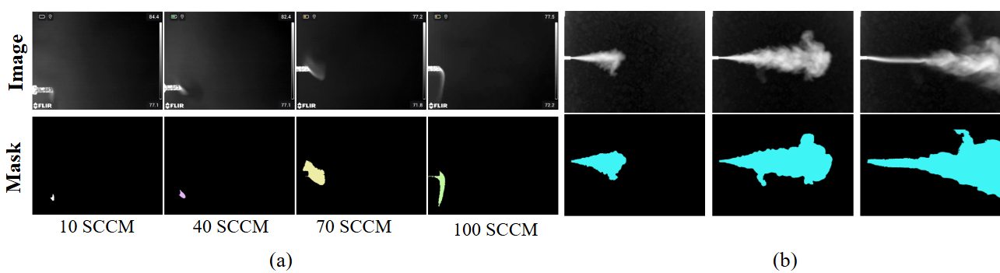
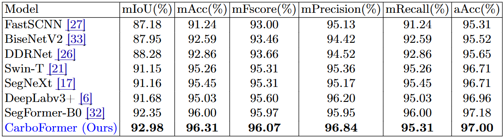

Highlights
Carbon dioxide (CO₂) emissions are critical indicators of both environmental impact and various industrial processes, including livestock management. We introduce CarboFormer, a lightweight semantic segmentation framework for Optical Gas Imaging (OGI), designed to detect and quantify CO₂ emissions across diverse applications while maintaining competitive accuracy with minimal computational overhead for resource-constrained environments.
Key Achievements:
- üéØ Competitive Performance: CarboFormer achieves 84.88% mIoU on CCR and 92.98% mIoU on RTA datasets
- ⚡ Real-time Processing: Operates at 84.68 FPS, enabling real-time monitoring applications
- üöÅ Lightweight Design: Only 5.07M parameters and 11.39G FLOPs for drone deployment
- üìä Novel Datasets: Two comprehensive datasets - CCR (controlled emissions) and RTA (livestock rumen fluid experiments)
- üî¨ Multi-scale Detection: Effective performance across varied flow rates from 10-100 SCCM
- üèÜ Superior to Lightweight Models: Outperforms SegFormer-B0 (83.36% mIoU) and SegNeXt (82.55% mIoU) on CCR
üèóÔ∏è Architecture Overview

CarboFormer Architecture: A lightweight semantic segmentation framework integrating an optimized encoder-decoder architecture with specialized multi-scale feature fusion and auxiliary supervision strategies. The model effectively captures both local details and global relationships in gas plume imagery while maintaining computational efficiency with only 5.07M parameters. The architecture employs efficient attention mechanisms and model compression techniques, making it particularly suitable for deployment on resource-constrained platforms such as programmable drones and edge devices for real-time CO₂ emission monitoring.
üéØ Motivation & Environmental Impact
Climate change mitigation and greenhouse gas management remain some of the most pressing challenges facing global environmental sustainability. Carbon dioxide (CO₂) significantly contributes to global warming, with NASA reporting that CO₂ accounts for approximately 80% of greenhouse gas emissions from human activities. Since the pre-industrial era, atmospheric CO₂ concentrations have increased by about 50%.
üîç Key Challenges Addressed:
- üè≠ Traditional Method Limitations: Expensive, cumbersome FTIR spectrometers with limited field applicability
- üêÑ Livestock Emissions: Detecting and quantifying low-flow CO₂ emissions from dairy cow rumen fluid
- ⚡ Real-time Monitoring: Need for continuous, automated CO₂ detection in various environments
- üéØ Precision Agriculture: Supporting livestock management and environmental monitoring decisions
- üöÅ Platform Constraints: Enabling deployment on resource-limited devices like drones
- ⚙️ Computational Efficiency: Balancing accuracy with minimal computational overhead
Innovation: CarboFormer addresses these challenges through a lightweight architecture that maintains competitive accuracy while optimizing for resource-constrained platforms, enabling widespread deployment for CO₂ monitoring across agricultural and industrial applications.
üìä Datasets & Experimental Setup
üî¨ Controlled Carbon Dioxide Release (CCR) Dataset

Figure: CCR Dataset Overview. The dataset features systematic CO₂ emissions captured via FLIR G343 OGI camera under controlled conditions with varied flow rates (10-100 SCCM). This comprehensive dataset provides extensive coverage of different emission intensities, enabling robust model training and evaluation across various gas leak scenarios representative of industrial applications.
üêÑ Real Time ANKOM (RTA) Dataset
Figure: RTA Dataset Visualization. Sample images and ground truth masks from the Real Time ANKOM dataset, containing real-time CO₂ emissions from dairy cow rumen fluid in vitro experiments using the ANKOM gas production module. This unique dataset captures the complex dynamics of biological CO₂ generation, providing valuable insights for precision livestock management and environmental monitoring applications in agricultural settings.
üìä Experimental Results & Analysis
üèÜ CCR Dataset Performance

Figure: Qualitative Results on CCR Dataset. Visual comparison of CarboFormer's segmentation performance against state-of-the-art methods including DeepLabv3+, Swin-T, FastSCNN, SegNext, DDRNet, and BiseNetV2. CarboFormer demonstrates superior plume boundary delineation and achieves competitive 84.88% mIoU while maintaining computational efficiency with only 5.07M parameters, making it particularly effective for challenging low-flow scenarios critical for environmental monitoring.
üêÑ RTA Dataset Performance
Figure: Quantitative Comparison on RTA Dataset. CarboFormer achieves exceptional 92.98% mIoU on livestock emission data, demonstrating superior performance across all metrics (mIoU, mAcc, mFscore, mPrecision, mRecall, aAcc). The model outperforms other lightweight architectures like SegFormer-B0 (90.44% mIoU) and Swin-T (89.07% mIoU) while maintaining efficiency, validating its effectiveness for precision agriculture applications and biological CO₂ emission detection.
⚖️ Performance vs Efficiency Trade-off

Figure: Qualitative Comparison on CCR Dataset. Visual comparison demonstrating CarboFormer's segmentation quality against state-of-the-art methods across different flow rate scenarios. The model achieves superior plume boundary detection and accurate segmentation while maintaining computational efficiency, making it particularly suitable for deployment on resource-constrained platforms such as programmable drones and edge devices for real-time field monitoring.
üìà Multi-Scale Flow Rate Analysis

Figure: Qualitative Results on RTA Dataset. Visual comparison of CarboFormer's performance on livestock emission data from dairy cow rumen fluid experiments. The model demonstrates robust detection across different temperatures (10°C, 70°C, 100°C) and effectively segments biological CO₂ plumes with high accuracy. CarboFormer shows particularly strong performance in detecting subtle emissions that traditional methods might miss, validating its effectiveness for precision livestock management applications.
üöÄ Key Contributions & Impact
üî¨ Technical Innovations:
- üèóÔ∏è Lightweight Architecture: CarboFormer achieves competitive accuracy with only 5.07M parameters and 11.39G FLOPs
- üéØ OGI Specialization: First lightweight semantic segmentation framework specifically designed for optical gas imaging CO₂ detection
- üìä Novel Datasets: CCR (controlled emissions) and RTA (livestock rumen fluid) datasets for comprehensive evaluation
- ⚡ Real-time Performance: 84.68 FPS enabling deployment on resource-constrained platforms
- üîÑ Multi-scale Feature Fusion: Specialized attention mechanisms for both local details and global relationships
üåç Practical Applications:
- üêÑ Livestock Management: Precision monitoring of rumen fluid CO₂ emissions for animal health assessment
- üè≠ Industrial Monitoring: Real-time detection of gas leaks across varied flow rates (10-100 SCCM)
- üöÅ Drone Deployment: Lightweight design enables aerial monitoring with efficient processing on programmable drones
- üå± Environmental Sensing: Continuous CO₂ monitoring for climate change research and emission tracking
- üì± Edge Computing: Suitable for mobile platforms and IoT devices with limited computational resources
üéØ Research Significance
This research advances both environmental sensing and precision livestock management by providing robust and efficient tools for CO₂ emission analysis. CarboFormer demonstrates that lightweight models can achieve competitive performance while maintaining minimal computational overhead, enabling widespread deployment of CO₂ monitoring systems on resource-constrained platforms such as programmable drones across agricultural, industrial, and environmental applications. The model shows particular effectiveness in challenging low-flow scenarios and significantly outperforms other lightweight methods.
üìù Citation
If you find CarboFormer useful in your research, please consider citing our paper:
@article{islam2025carboformer,
title = {CarboFormer: A Lightweight Semantic Segmentation Architecture for Efficient Carbon Dioxide Detection Using Optical Gas Imaging},
author = {Islam, Taminul and Sarker, Toqi Tahamid and Embaby, Mohamed G and Ahmed, Khaled R and AbuGhazaleh, Amer},
journal = {arXiv preprint arXiv:2506.05360},
year = {2025}
}
üìñ Paper: arXiv:2506.05360 (2025)
üîó arXiv ID: 2506.05360